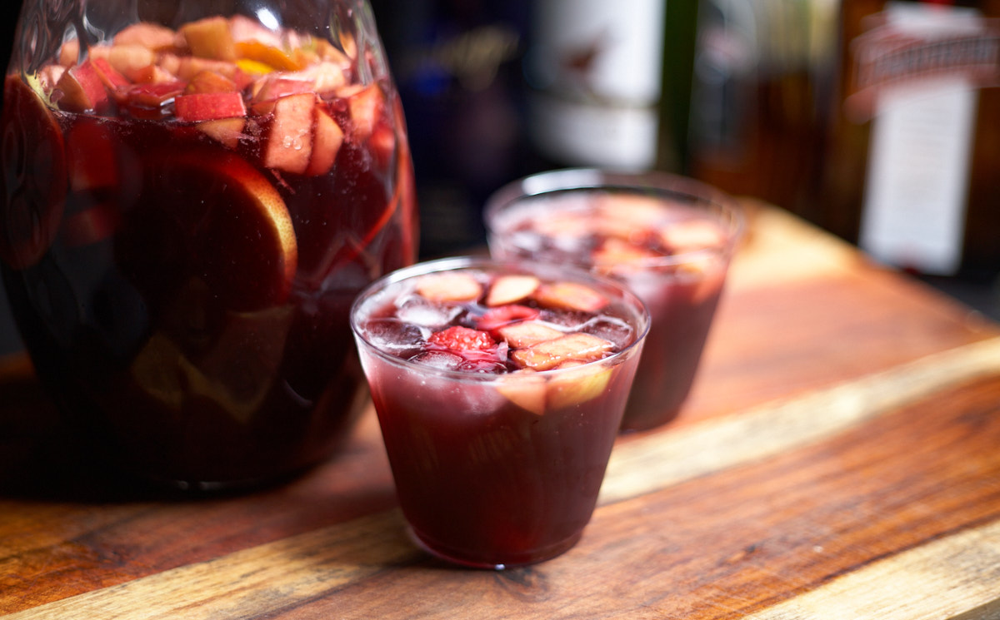

My favorite quick and easy recipe
This really is an easy to make and very tasty red wine Sangria. I’ve had people tell me they don’t enjoy Sangria as much, but after they taste this one, they are pleasantly surprised at how delicious it was. My favorite part is how easy it is to drink. There is no harsh alcohol taste at all. If you make it, let me know here or on YouTube. Cheers!
A link to the YouTube video: Refreshing Red Wine Sangria
Equipment
- Large Pitcher
Ingredients
Liquids
- 750 ml Red Wine (Cabernet Sauvignon, Tempranillo or any red wine you enjoy that is a bit fruity.)
- 1/4 Cup Brandy (60ml)
- 1/4 Cup Orange Liqueur, Triple sec (I like using Cointreau)
- 2 Tbsp Lemon Juice (30ml)
- 2 Tbsp Orange Juice (30ml)
- 2 Cups Chilled Sparkling Water (473ml)
Solids
- 1/4 Cup Sugar
- 1/2 Orange
- 1/2 Lemon
- 1 Apple
- 1 pack raspberries (optional)
Instructions
To a Pitcher Add
- Red wine
- The Brandy
- The orange liqueur
- The sugar
- Thinly slice half an orange and add it.
- Thinly slice half a lemon and add it.
- Add the orange juice
- Add the lemon juice
- Core then dice an apple and add it to the pitcher.
- Mix it well and let Sangria rest in the refrigerator for 1-2 hours.
Serving
- Mix Sangria well after removing from the refrigerator to dissolve any remaining sugar.
- Add two cups of chilled sparkling water to the pitcher, gently stir.
- Add ice to a cup, pour your Sangria, making sure to get some of the fruit in as well. I like topping it off with raspberries to contrast the sweetness of the Sangria.
Notes/Credit
This is my favorite red wine Sangria recipe! It’s inspired by a recipe from chef Emeril L.